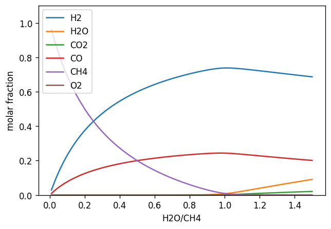
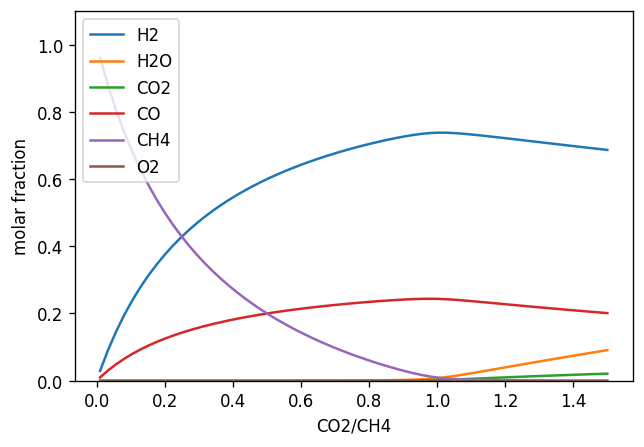

Methane Mixtures#
This example shows equilibria of methane mixed with steam and CO2
import gaspype as gp
import numpy as np
import matplotlib.pyplot as plt
Setting temperature and pressure:
t = 900 + 273.15
p = 1e5
fs = gp.fluid_system(['H2', 'H2O', 'CO2', 'CO', 'CH4', 'O2'])
Equilibrium calculation for methane steam mixtures:
ratio = np.linspace(0.01, 1.5, num=64)
el = gp.fluid({'CH4': 1}, fs) + ratio * gp.fluid({'H2O': 1}, fs)
equilibrium_h2o = gp.equilibrium(el, t, p)
fig, ax = plt.subplots(figsize=(6, 4), dpi=120)
ax.set_xlabel("H2O/CH4")
ax.set_ylabel("molar fraction")
ax.set_ylim(0, 1.1)
#ax.set_xlim(0, 100)
ax.plot(ratio, equilibrium_h2o.get_x())
ax.legend(fs.active_species)
<matplotlib.legend.Legend at 0x7fac3543af90>

Equilibrium calculation for methane CO2 mixtures:
el = gp.fluid({'CH4': 1}, fs) + ratio * gp.fluid({'H2O': 1}, fs)
equilibrium_co2 = gp.equilibrium(el, t, p)
fig, ax = plt.subplots(figsize=(6, 4), dpi=120)
ax.set_xlabel("CO2/CH4")
ax.set_ylabel("molar fraction")
ax.set_ylim(0, 1.1)
#ax.set_xlim(0, 100)
ax.plot(ratio, equilibrium_co2.get_x())
ax.legend(fs.active_species)
<matplotlib.legend.Legend at 0x7fac3538c2d0>
